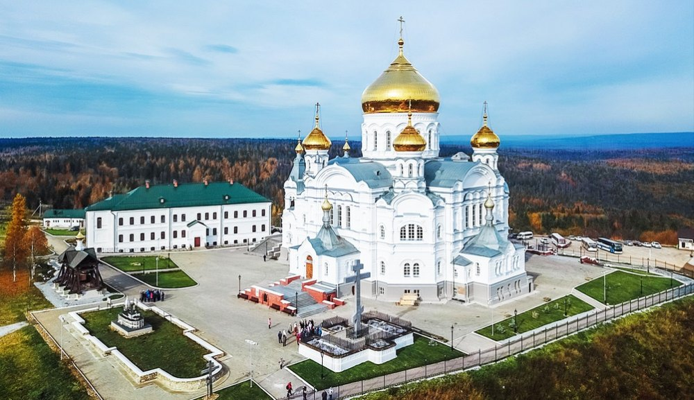

История нашего селения начинается с далекого 1731 года, когда заводчикам Осокиным (Гавриле Полуэктовичу и Петру Игнатьевичу), было разрешено на речке Юг построить медеплавильный завод.
Для строительства медеплавильного завода, были набраны крепостные крестьяне из разных мест нашей огромной страны Нижегородской, Новгородской, Архангельской, Московской и многих других губерний и земель.
Завод занимался выплавкой меди и кричного железа, литьем колоколов, изготовлением луженой и не луженой посуды.
Крепостные крестьяне разрабатывали рудники, доставляли медистый песчаник на завод, из которого и выплавляли медь.
В 1801 году у завода сменился хозяин. Внук Гаврилы Полуэктовича, Иван Петрович Осокин продает завод московскому купцу Андрею Андреевичу Кнауфу. И наше селение стало именоваться Юго-Кнауфский завод до 1914 года.
На начало 19 века выпал расцвет медеплавильной деятельности на Урале. На Юго-Кнауфском заводе выплавка меди доходила в 1804 году до 18800 пудов в год, при том, что содержание меди в породе составляло от 0,5 до 5 %.
Но из-за высокой себестоимости продукции дела на Кнауфских заводах пошли на ухудшение. В 1828 году за долги Кнауфские заводы взяты в казенное правление. В 1858 году завод передан кредиторам Кнауфа, образовавшим акционерную компанию Кнауфских заводов. Но дела заводов компания не поправила, а только увеличила казенные долги. В 1872 году Юго-Кнауфский завод сделал последнюю выплавку и прекратил свою деятельность.
В это время при заводе уже вырос большой рабочий поселок, с правильным улично-квартальным строением. В центральной части селения преобладали купеческие шестистенки, строятся двухэтажные дома купцами Курочкиным А.Н., Волокитиным В.А., Пигасовым В.Ф.
Работают небольшие промышленные предприятия пихтоваренный завод, фаянсовая и спичечная фабрики, кирпичные сараи. Каждое воскресенье на центральной площади шумел базар. Два раза в год проводились трехдневные ярмарки, в июне Троицкая, а в ноябре Михайловская. Что только не продавалось на ярмарке, от дров и сена, до мануфактуры и галантерейных товаров. Цены 1926 года, нас современных жителей удивляют. Мануфактура — 80 копеек за метр, воз сена — 3рубля 50 копеек, воз дров — 1 рубль 50 копеек, ржаная мука — 2рубля 50 копеек за пуд (16 кг.), пшеничная мука — 4 рубля 50 копеек за пуд, мясо — 16 копеек за фунт (400 грамм).
Михайлов день в селении был престольным праздником. Родственники и гости из соседних сел, деревень и выселок съезжались, как товаров прикупить да продать, так и родственников навестить да у них «отстоловать».
1890 год — год создания Белогорского монастыря. В этот год, уважаемый в то время миссионер Православной церкви протоиерей Стефан Луканин посещает по делам миссии Бымовский завод, где встречается с двумя священниками из Юго-Кнауфского завода, церковным старостой и местным народным учителем. Те, по просьбе Луканина, показывают ему Белую гору. Вот как описывает это сам Луканин в своих воспоминаниях: «В порыве восторга» и несмотря на позднее время, все собрались и отправились за 12 верст на Белую гору... На гору прибыли лишь к рассвету... Это было в три часа поутру 9 июня 1890 года. Взойдя на гору, я уже не сомневался, что это место создано для миссионерского монастыря. На горе поставили небольшой деревянный крест. Так было положено начало созданию Белогорской обители.»

9.11.1917 года на базарной площади на митинге с крыльца волостного правления сельским сходом была принята советская власть, Василий Антонович Налескин избран первым председателем волостного правления.
1919 год — тяжелый период гражданской войны. Юго-Осокино, как и весь Урал находится в кольце боевых действий, два раза селение занимали колчаковские войска. Более 200 человек погибло в районе Юго – Осокинского завода, был разграблен Белогорский монастырь.
В 1923 году Юго-Осокинский район стал волостным, а в последствии районным центром, до 1931 года. В состав, которого вошли сельсоветы: Юго-Осокинский, Бизярский, Бымовской, Ершовский, позднее Юговской, Мазунинский, Бырминский, Аннинский.
1920е годы — начало коллективизации. Первая сельхозкоммуна Труд была организована в 1921 году в деревне Ильинка, Ляминым Степаном Григорьевичем. Членами коммуны были Степан Григорьевич Лямин, Федор Васильевич Монахов, Карл Августович Бенкис, Алексей Любимов, Павел Иванович Колышкин и другие. В деревне Мокеевка организована коммуна Пролетарский пахарь.
1929 год — период массовой коллективизации, организованы первые сельхозартели; Ленинский путь, 1 мая, Заря, Степановка, Смычка, Красный Урал, Пролетарский пахарь, Трудовик, Ударник.
В 1935 году организована Юго-Осокинская МТС, получили первые трактора, началась подготовка и обучение трактористов.
В период с 1940 по 1959 годы Юго-Осокино (Калинино) становится второй раз районным центром. В 1941 году вышел в свет первый номер Юго-Осокинской районной газеты «Голос колхозника». За годы Великой Отечественной войны на фронта ушли 858 односельчан, более 560 не вернулось с полей битвы.
В 1952 году село Юго-Осокино переименовывают в село Калинино. В честь М.И.Калинина председателя ВЦИК.
1958 год — год укрупнения колхозов. Из нескольких десятков мелких колхозов образован колхоз имени Калинина, председателем избран Израил Абрамович Талянский. Благодаря его заботам в селе велось большое культурно-бытовое и хозяйственное строительство. В селе была открыта музыкальная школа(1968 год). Продукция колхоза неоднократно получала дипломы областных выставок сельского хозяйства.
В 1978 году пушен в работу роддом Калининской УБ ( 2008 реконструирован в хирургическое отделение). В 1986 году построен колхозный детский сад «Сказка». В 2011 году, коллектив детского сада празднует свой 25 летний юбилей, все эти годы бессменной заведующей работает, Костылева Е.А. Творческие работники были отмечены в 2011 году грамотами управления образования Курочкина М.Л. и Волокитина Л.К. Руководитель театрального коллектива Курочкина С.Н. дипломом 1 степени, почетной грамотой тур. комплекса «Сталагмит» Миронова Л.А. в подготовке детей к конкурсу «Кунгурская ледяная пещера». В детском саду была проведена межрайонная научно-методическая конференция «Русский язык как цель и средство обучения и воспитания» с выступлениями и публикациями выступили воспитатели Курочкина М.Л. и Мальцева К.И.. На базе калининского детского сада, была проведена конференция по теме «Работа с родителями» сертификатами конференции отмечены; Курочкина С.Н., Волокитина Л.К., Пустобаева Н.А..
В трудный период 1990х колхоз им Калинина делится на два колхоза, СПК Калининский и ООО Ранний рассвет. ООО Ранний рассвет успешно ведет свою хозяйственную деятельность.
22.02.2007 состоялось торжественное открытие Калининского почтового отделения после реконструкции, в котором открыт компьютерный зал.
Три поколения жителей села ждали, что будут учиться в новой школе и наконец 16.03.2007 года это событие состоялось. Распахнуло двери, трехэтажное здание новой школы.
В 2008 году сбербанк с. Калинино приобрел свое помещение.
В 2009 году с.Калинино — это населенный пункт с численностью населения 2855 человек, удаленность от районного центра г.Кунгура 51 километр. На территории Калининского сельского поселения расположены 5 деревень: Андреевка, В.Талица, Белая гора, Ивановка, Подсобное хозяйство.
Работает 26 учреждений, предприятий и организаций. 15 индивидуальных предпринимателей.
В 2008 году директору Калининской школы искусств Белугину Николаю Николаевичу присвоено звание «Почетный гражданин Кунгурского района», за многолетний плодотворный труд в деле музыкального просвещения детей. Николай Николаевич родился в1941 году в Костромской области. После окончания Пермского музыкального училища в 1968 году приехал в с.Калинино, где и стал работать одновременно директором и преподавателем музыкальной школы. Под его руководством было построено новое здание для музыкальной школы. Организован хороший педагогический коллектив, в 2008 году награждены грамотой министра культуры Пермского края Суровцева Л.А., Муллаярова М.М., Гатиатулина О.Н., Белугина М.К., Белугин Н.Н. Николай Николаевич Белугин включен в энциклопедию «Лучшие люди России». Белугина Мария Константиновна преподаватель школы искусств и ее ученики Татаркина Анжелика, Самоловских Анжелика, Масагутова Есения, Торсунов Кирилл, в 2007 году внесены за многократное участие во всероссийских конкурсах юных художников, в энциклопедию «Одаренные дети – будущее России».
Много хороших слов можно сказать о руководителе с/предприятия ООО Ранний рассвет Кадниковой Алевтине Павловне. В 1995 году она возглавила с/предприятие, которое было организовано путем разделения колхоза им.Калинина на СПК Калининский и ООО Ранний рассвет. Свою трудовую деятельность Алевтина Павловна Начала в 1977 году. От телятницы до руководителя прошла трудовой путь. Избиралась депутатом земского собрания, депутатом сельского поселения. За трудовые достижения в 2008 году награждена медалью «Кормилица России». Медалью награждена работница ООО Ранний рассвет Костылева Наталья Теддьевна. В 2007 году почетной грамотой министра сельского хозяйства награждены: Кадникова А.П., Фофанов Н.С., Костылев В.С., Кокшаров В.А., Кадников Ю.А., Челноков А.П., Горбунцова В.П.; в 2008г – Атаманов И.А.. Монахов Р.А., Корелин С.П..
В 2011 году, ООО Ранний рассвет, открывает новую столовую-пекарню, уютная обстановка и вкусная выпечка радует жителей и гостей села.
В 1992 году открыта новая амбулатория калининской участковой больницы. Наверное не найти в нашем поселении человека который хотя бы раз не обращался на прием в калининскую участковую больницу к хирургу Курникову Владимиру Дмитриевичу. Много спас он человеческих жизней. Слава о нем, как о замечательном хирурге давно шагнула за пределы Кунгурского района. Внимательный, доброжелательный он несет здоровье людям. В 2011 он награжден почетной грамотой министерства здравоохранения. За многолетний добросовестный труд награждена почетной грамотой министерства старшая медсестра калининской участковой больницы Шадрина Татьяна Алексеевна. Отмечены, почетными грамотами за хорошую работу Никандрова Маргарита Сергеевна, Михеева Елена Александровна.
Всю свою трудовую жизнь проработала почтальоном Калининского почтового отделения Харитонова Татьяна Алексеевна, с января 1974 девчонкой после окончания школы и до выхода на пенсию по 9 октября 2008 года. Трудолюбивая, добросовестная, отзывчивая, она пользовалась большим уважением односельчан. За добросовестный многолетний труд, награждена, грамотой Управления Федеральной почтовой связи Пермского края.
К сожалению не все гладко в жизни села. Ликвидируется Калининский детский дом, много опытных специалистов попали, под ликвидацию предприятия. На базе этого учреждения будет базироваться психоневрологический дом-интернат. Прошло сокращение штатов у связистов в ЭТУС, закрылась Калининская пекарня, которая ранее принадлежала Райпо, а за тем частному лицу.
Население села стареет, молодые в селе остаются мало, работы для них нет.
Но люди, живущие среди нас и достойно выполняющие свою работу на благо села всегда пользуются уважением среди односельчан.